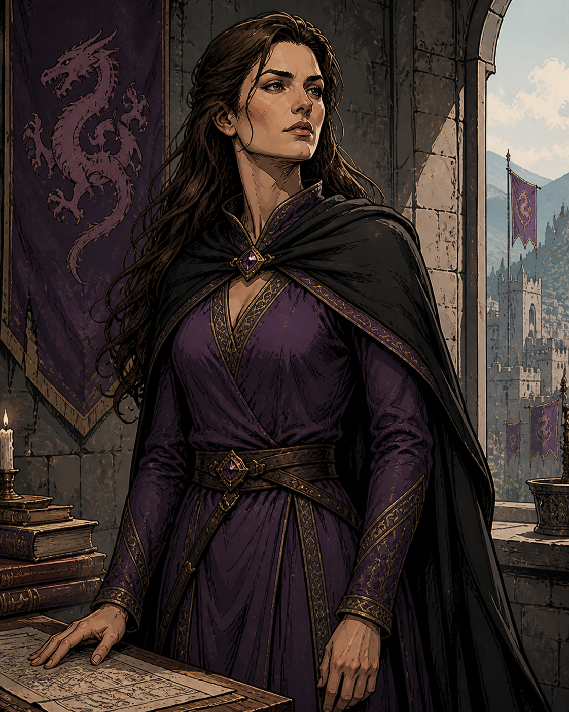

Tanalasta Obarskyr
Cargo Princesa heredera de Cormyr, fallecida Casa / afiliación Casa Obarskyr; devota de Chauntea Raza y clase Humana; aristócrata 3/guerrera 3 (hoja de 1371 DR) Alineamiento Legal bueno Edad al morir Aproximadamente 37 años, en 1371 DR Fuentes Cormyr (AD&D 2e) · Cormyr: A Novel · Beyond the High Road · Death of the Dragon · Four from Cormyr · Cormyr: Land of the Purple Dragon
Tanalasta Obarskyr murió en 1371 DR, poco después de dar a luz al niño que heredaría el reino. A fines de 1374 su lugar en Cormyr pertenece a la memoria, a la familia que sobrevivió a la guerra y al reinado de Azoun V. Había pasado buena parte de su vida preparándose para suceder a su padre; al final aseguró la continuidad de la Corona sin llegar a ceñirla. El deber que otros habían visto como un matrimonio conveniente terminó exigiéndole la vida.1
La heredera de los libros y las cuentas
Era delgada y alta, de aproximadamente 1,83 m, con el cabello largo y castaño oscuro y los ojos azules. Algunos la juzgaban delicada y poco llamativa; otros encontraban en ella una belleza excepcional. Ninguna de esas miradas decidía por sí misma la fuerza que llegaría a mostrar durante la crisis del reino.2
Nació en 1334 DR, hija mayor de Azoun IV y Filfaeril. Alusair llegó un año después. Mientras la menor buscaba aventuras, Tanalasta fue una colaboradora cercana del rey y cumplió obligaciones oficiales en su nombre. La reserva con que ocupaba ese lugar favoreció una imagen que los cortesanos repetían con facilidad: una princesa de libros y cuentas, demasiado callada para imponer su voluntad y poco adecuada para ponerse al frente de un ejército.3
Aquella opinión decía tanto de quienes la pronunciaban como de ella. Bhereu podía imaginarla desenvainando un ábaco en lugar de una espada; la misma corte que se burlaba de su timidez esperaba que un matrimonio suyo resolviera la sucesión. Tanalasta debía aprender a gobernar bajo las miradas de hombres que ya habían decidido en qué consistían sus límites. Su servicio al rey no impedía que la juzgaran por aquello que creían que nunca sería capaz de hacer.4
Los pretendientes tampoco eran un asunto exclusivamente privado. Rechazarlos podía interpretarse como desprecio al deber dinástico; aceptarlos dejaba al futuro del reino expuesto a las intenciones del elegido. En 1369 DR, Aunadar Bleth aprovechó precisamente esa proximidad para acercarse al poder. La traición la humilló y la obligó a revisar la confianza que había depositado tanto en el hombre que la cortejaba como en su propia capacidad de reconocerlo.5
Un año entre campos y montañas
Después de aquella crisis viajó con Vangerdahast. El viejo tutor le mostró algo del mundo, pero también intentó corregir el rumbo de su creciente interés por Chauntea. Tanalasta acabó tomando una decisión propia: entró en Huthduth. Allí no se limitó a refugiarse de la corte. Aprendió a trabajar con el cuerpo, a despejar piedras, guiar bueyes, cosechar, recoger bayas y buscar setas. La utilidad de sus manos dejó de medirse por documentos y cuentas.6
Cuando regresó en 1370 DR, podía ascender una pendiente sin el cansancio que sus acompañantes esperaban de ella. Ya no aceptaba que la trataran como una figura frágil. El cambio físico acompañaba a otro menos visible: había aprendido a responder y a mantener una decisión frente a Vangerdahast. Su respeto por él no había desaparecido, pero ya no quería confundir el servicio de un consejero con el derecho a gobernar la voluntad de una princesa.7
Dauneth Marliir ofrecía la clase de matrimonio que podía tranquilizar a muchos. Era leal, había demostrado valor y Tanalasta reconocía sus méritos. Sin embargo, ella quería amarlo y no lo amaba. La presión de su madre, las maniobras alrededor del cumpleaños de Azoun y las intervenciones del mago transformaron un cortejo en una prueba pública. La princesa rechazó la idea de que una solución políticamente cómoda bastara para decidir el resto de su vida.8
Los sacerdotes que no fueron un regalo sencillo
Su proyecto más visible fue presentar a Owden Foley y doce sacerdotes de Chauntea ante el rey. Propuso establecer un templo real dedicado a cuidar la salud de las tierras de Cormyr. La intención nacía de una preocupación concreta por los campos, pero la palabra «real» cambiaba el alcance de todo lo que ofrecía. El cuidado de las cosechas y el patrocinio de una iglesia desde la Corona se habían unido en una misma iniciativa.9
Azoun, Filfaeril y Vangerdahast vieron consecuencias que Tanalasta no podía resolver simplemente apelando a la bondad de su propósito. Las demás iglesias también podían reclamar un templo privilegiado; los nobles podían cambiar de devoción para ganar favor o resistirse a una fe favorecida por la familia real. El proyecto fue cancelado y los sacerdotes recibieron la orden de retirarse. La discusión terminó con otro mandato: Tanalasta debía llevarlos a las Stonelands para buscar a Alusair. La derrota no volvió falsa la preocupación de Tanalasta por los campos, pero le mostró que gobernar exigía considerar también las rivalidades creadas por una buena intención.10
Cuando salió a investigar la plaga que afectaba los cultivos, esa preocupación encontró personas concretas. El granjero necesitaba ayuda para su tierra, mientras magos, sacerdotes y autoridades discutían sobre el modo de presentarse y de actuar. Tanalasta pudo moverse entre esas exigencias sin dejar de ver el problema que las había reunido. La fe que defendía estaba vinculada al trabajo aprendido en Huthduth y al sustento de la gente, no únicamente a una posición en el ceremonial de palacio.11
Rowen y una decisión propia
Conoció a Rowen Cormaeril durante aquellos viajes. Era un explorador devoto de Chauntea, y la familiaridad religiosa ofreció un terreno de entendimiento que no había encontrado en los cálculos de otros pretendientes. Su apellido, en cambio, llevaba el peso de una casa implicada en traición. Para Vangerdahast, que vigilaba la relación e informaba a Azoun, el interés de la princesa abría un nuevo problema donde él esperaba haber cerrado el anterior.12
El embarazo de Tanalasta se convirtió en un asunto de legitimidad además de afecto. Las preguntas sobre el heredero podían transformar cualquier decisión privada en una disputa por el futuro del reino. Una túnica púrpura de Estado podía ocultar durante un tiempo los cambios de su cuerpo, pero no resolver las preguntas que la corte haría sobre el heredero. La princesa que había sido presionada para dar un hijo al reino debía defender ahora las condiciones en que ese hijo entraría en la línea real.13
Su capacidad para resistir no se reducía a la palabra. En los caminos había usado brazales que lanzaban proyectiles mágicos y conocía además una incantación ofensiva independiente de ellos. En la corte tuvo que exigir deberes a los nobles y enfrentarse a quienes trataban la crisis como una oportunidad para imponer condiciones. Ninguna de esas capacidades la volvió invulnerable: fueron medios limitados para mantener el control de circunstancias que se deshacían con rapidez.14
Lo que sostuvo hasta el final
En 1371 DR, Tanalasta ya no era únicamente la heredera a la que otros querían preparar. Escuchaba, ordenaba y discutía decisiones que afectaban al reino. El juicio que se había formado sobre sí misma después de la traición no la condenó a retirarse de toda responsabilidad. Había aprendido a reconocer que el miedo, la duda y la falta de aprobación no eliminaban la obligación de actuar cuando la decisión le correspondía.15
Su muerte llegó durante la violencia de la guerra, cuando Boldovar la hirió de forma mortal y el parto comenzó en medio del ataque. Consiguió dar a luz. El niño sobrevivió y Steelhand lo puso sobre su pecho cuando apenas le quedaban fuerzas. La heredera que nunca llegó a reinar había entregado al reino otro Azoun. Filfaeril comunicó después a Vangerdahast la muerte de su hija y la supervivencia del recién nacido; Alusair tendría que sostener la regencia por él.16
La continuidad de Cormyr no borró el coste de aquella supervivencia. Alusair buscó a su hermana y solo encontró silencio; Filfaeril perdió a su hija mayor mientras su marido también se acercaba a la muerte. A fines de 1374, el hijo de Tanalasta ocupa el centro de la sucesión y su hermana gobierna en su nombre. La princesa permanece en ese vínculo entre las personas que faltan y la obligación de quienes siguieron viviendo.17
Rumores
Antes de la guerra, la corte había convertido su silencio en falta de carácter y sus dificultades para escoger marido en un defecto de Estado. Durante el embarazo, las especulaciones se desplazaron hacia el padre del niño y la legitimidad de lo que estaba por nacer. Tales conversaciones podían parecer entretenimiento mientras corrían por los salones, pero llevaban consigo la posibilidad de impugnar una sucesión. La vida privada de Tanalasta nunca había estado protegida de esas consecuencias.18
Estadísticas (D&D 3.5)
Hoja de juego · 1371 DR
| Tamaño/Tipo | Humanoide Mediano (humano) |
|---|---|
| Alineamiento | Legal bueno |
| Edad | 37 años al morir, en 1371 (nació en 1334) |
| Características | Fue 10, Des 11, Con 12, Int 16, Sab 16, Car 17 |
| Dados de Golpe | (3d8)+(3d10)+6 (50 PG) |
| Iniciativa | +0 |
| Velocidad | 6 m |
| Clase de Armadura | 17, toque 12, desprevenido 17 |
| Ataque base/Presa | +5/+5 |
| Ataque | Masterwork Longsword +7 c/c (1d8/19-20) |
| Ataque completo | Masterwork Longsword +7 c/c (1d8/19-20); o Peacemaker's Rod +7 c/c (1d6+2) |
| Espacio/Alcance | 1,5 m/1,5 m |
| Salvaciones | Fort +5, Ref +2, Vol +9 |
| Dotes | AlertnessYou have finely tuned senses.Unearthed Arcana, p.89, Combat ExpertiseYou are trained at using your combat skill for defense as well asoffense.Player's Guide to Faerûn, p.92, Iron WillYou have a stronger will than normal. You get a +2 bonus on all Will saving throws.Player's Handbook, p.96, LeadershipYou are the sort of person others want to follow, and you have done some work attempting to recruit cohorts and followers.Player's Guide to Faerûn, p.97, NegotiatorYou are good at gauging and swaying attitudes.Player's Guide to Faerûn, p.98, PersuasiveYou have a way with words and body language.Player's Guide to Faerûn, p.98, Skill Focus (Diplomacy)Choose a skill, such as Move Silently. You have a special knack with that skill.Unearthed Arcana, p.100, Weapon Focus (Longsword)You are especially good at using this specified weapon.Player's Guide to Faerûn, p.102 |
| Habilidades | Averiguar intencionesDetectar mentiras e intenciones ocultas.9 rangos · Sab +14, AvistarAdvertir lo que está a la vista.4 rangos · Sab +9, DiplomaciaNegociar, persuadir y cambiar la actitud de los demás.9 rangos · Car +21, EscucharOír ruidos y conversaciones.4 rangos · Sab +9, MontarMontar y combatir a caballo.6 rangos · Des +6, Saber (historia)Saber erudito de un campo concreto.6 rangos · Int +9, Saber (nobleza y realeza)Saber erudito de un campo concreto.9 rangos · Int +12, Saber (religión)Saber erudito de un campo concreto.6 rangos · Int +9 |
| Idiomas | Chondathan, Common, Elven |
| Deidad | Chauntea |
Masterwork LongswordPersonalizado - Wizards of the Coast - Player's Handbook, p.119, Chain Shirt +1A chain shirt protects your torso while leaving your limbs free and mobile. It includes a layer of quilted fabric worn underneath to prevent chafing and to cushion the impact of blows. A chain shirt comes with a steel cap.Personalizado - Wizards of the Coast - Player's Handbook, p.124, Ring of Protection +2This ring offers continual magical protection in the form of a deflection bonus of +2 to AC. Faint abjuration; CL 5thDungeon Master's Guide, p.232, Holy Symbol, WoodenA holy symbol focuses positive energy. A cleric or paladin uses it as the focus for his spells and as a tool for turning undead. Each religion has its own holy symbol, and a sun symbol is the default holy symbol for clerics not associated with any particular religion. A silver holy symbol works no better than a…Player's Handbook, p.130, Noble's OutfitThis set of clothes is designed specifically to be expensive and to show it. Precious metals and gems are worked into the clothing. to fit into the noble crowd, every would-be noble also needs a signet ring (see Adventuring Gear, above) and jewelry (worth at least 100 gp).Player's Handbook, p.131, Royal Signet of the ObarskyrsSello de la familia real. Quien lo lleva toca el anillo, imagina el rostro del Mago Real y le habla mente a mente (recado con el Mago Real como único destinatario, 3/día). Sirve también de sello y prueba de autoridad real. Lo usan los Obarskyr; un portador prudente se lo quita cuando lo persiguen criaturas que se…Adaptación a 3.5 · Cormyr: Beyond the High Road, Battlestar BracersBrazales lisos de metal (hay que llevar los dos). Continuo: protección contra flechas y −1 al daño por dado de los ataques de fuego y los proyectiles mágicos. Cada 3 asaltos, por voluntad silenciosa: 4 proyectiles mágicos (1d4+1 cada uno, blancos distintos) o una esfera flamígera hacia donde se señala. No dan…Adaptación de 2e a 3.5 · VGC p.235, Peacemaker's RodBastón de mando negro con dragones de latón en los extremos (+2). Al golpear, en lugar del daño normal: inmovilizar monstruo sobre el golpeado (1/día, salvación a −3) o repulsión del golpeado (1/día, 12 asaltos). A voluntad dispara por un extremo una esfera de luz de 3 m que viaja 60 m y estalla (señal,…Adaptación de 2e a 3.5 · VGC p.236, War Wizard Cloakconstant Endure Elements (Cold), Darkvision, Feather FallMagic of Faerûn, p.167
Hoja calculada con PCGen (D&D 3.5) · 1371 DR · descargar .pcg
Secretos (DM)
Una esfera hueca de metal podía convertirse por orden verbal en la llave de una cámara secreta del palacio; Tanalasta tenía una de las cinco existentes.19
Rowen Cormaeril era el padre de Azoun V y el esposo de Tanalasta. Su transformación en ghazneth estuvo ligada al temor de traicionarla y a las manipulaciones de Boldovar.1320
Tanalasta intervino en la liberación de Suzara mediante reconocimiento, perdón y autoridad de heredera. Ante Boldovar, ya mortalmente herida, le concedió su dolor y lo absolvió como descendiente de su linaje. Él se convirtió en polvo. Son actos particulares de la historia de los Obarskyr; no una capacidad clerical que pueda repetirse libremente en otros encuentros.21
Después de 1374
La continuidad dinástica corresponde a Azoun V. No se describe aquí una reaparición posterior de Tanalasta ni se la presenta como viva después de su muerte.1
Footnotes
-
Death of the Dragon, pp. 327–328, 359, 368–371; Cormyr: Land of the Purple Dragon, p. 15. ↩ ↩2
-
Forgotten Realms Wiki → Dragon Annual #4 (1999) p.135; Cormyr: A Novel, edición inglesa1998 pp.49,53. ↩
-
Cormyr (AD&D 2e), p. 43. ↩
-
Cormyr: A Novel, pp. 19, 119–122. ↩
-
Cormyr: A Novel, pp. 46–50, 75; Beyond the High Road, pp. 15–16, 23. ↩
-
Beyond the High Road, pp. 10, 15–16, 23. ↩
-
Beyond the High Road, pp. 15–16, 23. ↩
-
Beyond the High Road, pp. 29–37. ↩
-
Beyond the High Road, pp. 38–40. ↩
-
Beyond the High Road, pp. 40–58. ↩
-
Beyond the High Road, pp. 61–69. ↩
-
Beyond the High Road, pp. 127–139. ↩
-
Beyond the High Road, pp. 159–161; Death of the Dragon, pp. 91–100. ↩
-
Death of the Dragon, pp. 91–100, 280–286. ↩
-
Death of the Dragon, pp. 325–328, 359, 368–371. ↩
-
Death of the Dragon, pp. 351–359, 368–371. ↩
-
Cormyr: A Novel, pp. 19, 119–122; Death of the Dragon, pp. 71–100, 285. ↩
-
Forgotten Realms Wiki → Cormyr: A Novel, edición inglesa1998 p.88. ↩
-
Death of the Dragon, pp. 320–322. ↩
-
Death of the Dragon, pp. 288–289, 327–328. ↩